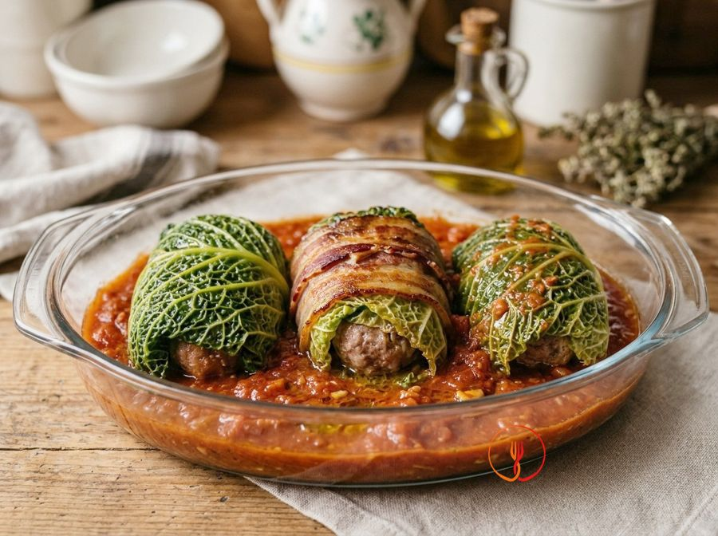

Sausage and Savoy Cabbage Bundles
Excellent autumn dish
Ingredients
- Sausage8 pcs
- Savoy cabbage leaves8 pcs
- Sliced pancetta8 pcs
- Tomato passata4 tbsp
- Garlic1 clove
- Extra virgin olive oil1 tbsp
Allergens
None of the 14 main allergens in the ingredients.
Method
- Place a pot full of water on the heat, salt it and when it comes to a boil, slightly lower the flame and blanch the cabbage leaves, then place them to dry on a clean kitchen towel.
- N.B: cabbage leaves often have a central part that is very hard. In this case, I recommend removing only the hardest part without risking tearing the leaf.
- Spread the cabbage leaves on a surface and place a piece of sausage on each leaf.
- Wrap the sausage in the cabbage leaves creating a roll, taking great care not to break them.
- Wrap each roll with a slice of pancetta. Place the rolls in a baking tray and bake them at 180 degrees for 25 minutes.
- In a pan, heat the oil, brown the garlic and when it is golden, add the tomato passata and cook for 10-15 minutes. If it dries out too much, add a little water occasionally. Season with salt and pepper.
- When the rolls are ready, serve them on a nice plate and season them with the tomato sauce.
Open the recipe in the app for the shopping list, ingredient sheets and nearby shops.